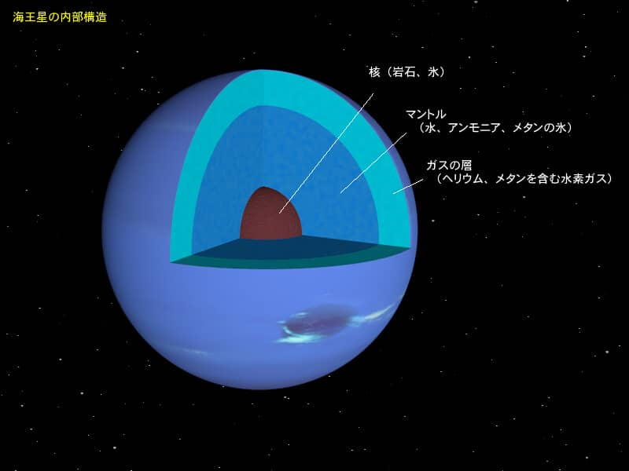
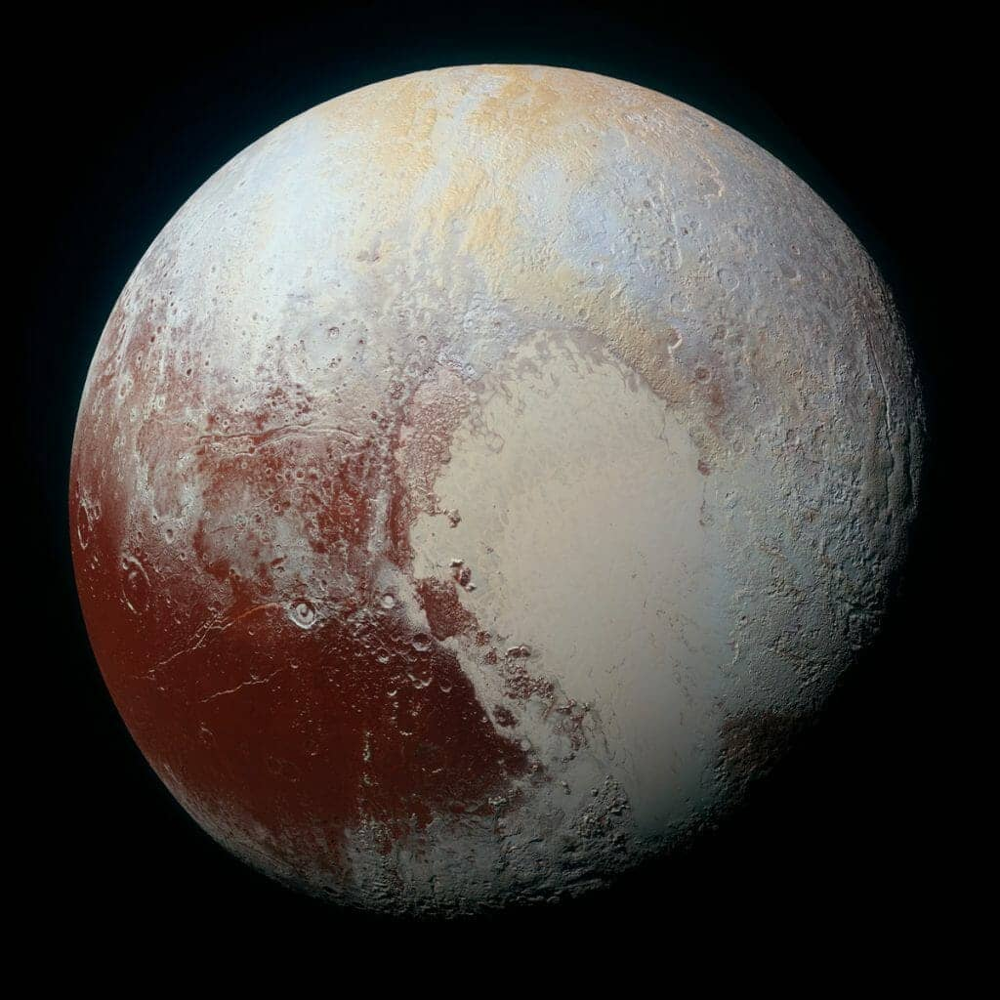
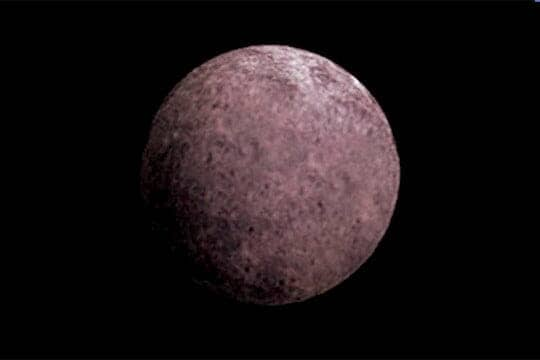

(2024/03/13)
海王星の概要
太陽系第八惑星です。太陽系の惑星の中で最も遠いです。
直径は4万9500kmです。14個の衛星を持っています。
自転周期は16時間で公転周期は165年です。
天王星型惑星に分類されまます。
天王星の平均気温は-218℃です。時速2100kmの風が吹いています。
海王星の構造
基本構造

中心から岩石と氷の核、氷を含んだマントル、水素とヘリウムの大気、その上層にメタンの大気で構成されたガス惑星です。
天王星と同じ理由で青く見えます。
海王星の外側へ
海王星は太陽系で最も外側にあります。この先は、どのようになっているのでしょうか。
直ぐに太陽系の外になるわけではありません。海王星の外側では太陽系縁天体
と呼ばれる無数の小惑星が存在します。そこにかつて惑星として扱われていた冥王星も存在しています。
さらにその外側にはオールトの雲と呼ばれる小惑星や彗星といった天体が太陽系を球状に囲んでいると考えられています。
冥王星はなぜ準惑星になったのか
まず惑星の定義を見ていきましょう
1,太陽系の周りを回ること
2,十分大きな質量を持つために自己重力が固体としての力よりも勝る結果、重力平衡形状（ほぼ球状）を持つこと
3,その軌道近くから他の天体を排除していること
2つめの定義はその天体の重力が強いため、球体になっていることを指します。

冥王星はその近くに現在発見されている準惑星の中で2番目に大きいエリスが存在しているため、
3つめの定義から外れてしまいます。
そのため準惑星に変更されました。
冥王星は準惑星の中で最も大きいです。

動画でさらに理解を深めよう！